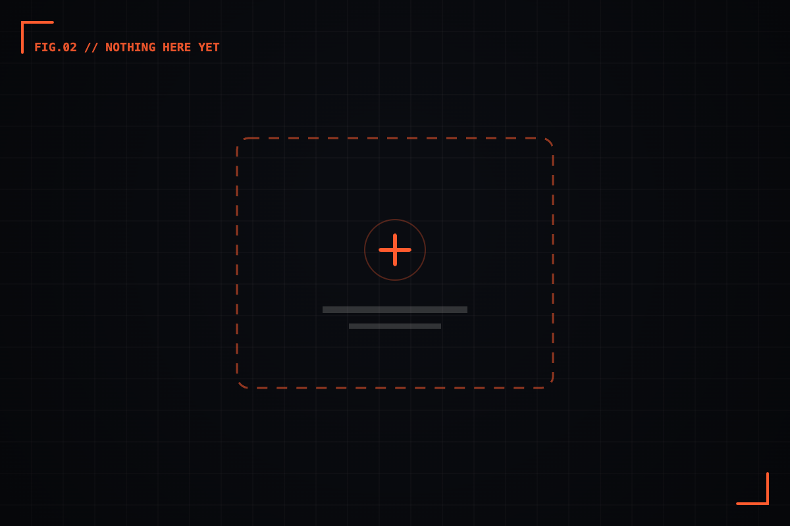

The quiet power of empty states.
A blank screen is a first impression. Here's how to make "nothing here yet" feel like a beginning, not a dead end.


The first screen most people see in your product is empty. No projects, no messages, no data — just the bare skeleton of what's to come. And yet it's almost always the last screen anyone designs.
We build for the full account because that's where we live as makers. Our test data is rich, our dashboards are busy, our tables overflow. So the empty state gets a shrug and a centered line of grey text — "No items yet" — and we move on. But that blank screen is the exact moment a new user decides whether this thing is worth their time.
An empty state isn't the absence of a design. It is the design — just at its most honest, because there's nothing else on the screen to hide behind.
01 / ReframeIt's not empty, it's the start
The word "empty" sends us the wrong way. It suggests something is missing, a gap to apologise for. But to a first-time user, there's nothing missing yet — they just arrived. The screen isn't broken; it's day one.
That reframe changes everything about how you design it. An apology says "sorry, there's nothing here." An invitation says "here's the first thing worth doing." Same blank canvas, completely different feeling. The best empty states I've built don't draw attention to the void — they point past it, at the single action that makes the void disappear.
A blank screen asks a question: "what now?" Your job is to answer it before the user has to ask.
02 / AnatomyWhat earns its place on a blank screen
When there's almost nothing on the screen, every element that survives carries enormous weight. A useful empty state usually needs only three things, and rarely more:
- One line that orients. Where am I, and why is it empty? "Your projects will live here" beats "No data."
- One action that resolves it. A single, obvious next step. Not five buttons — one. The whole point is to remove the paralysis of a blank page.
- One hint of the payoff. A faint preview of what this space looks like full, so the user understands what they're working toward.
Notice what's missing: no illustration of a sad cardboard box, no clever joke that wears thin by the third visit. Restraint reads as confidence. The moment an empty state tries too hard, it stops feeling like a beginning and starts feeling like a consolation prize.
Design the empty state and the full state side by side, in the same file. When you can see both, the empty version stops being an afterthought and starts being the on-ramp to the one beside it.
03 / The other emptiesNot all blank screens are the same
"Empty state" is really three different screens wearing one name, and they each want a different tone:
The first-run empty is hopeful — the user just arrived and you're welcoming them in. The cleared empty is a small victory — inbox zero, all tasks done — and it should feel like an accomplishment, not a malfunction. The no-results empty is the tricky one, because the user did something and got nothing back; here you owe them a reason ("no matches for 'xyz'") and an exit ("clear filters"). Treat all three identically and at least two of them will feel wrong.
04 / Why it mattersThe cheapest trust you'll ever earn
Here's the quiet economics of it. Empty states cost almost nothing to design — a few hours, a paragraph of copy, one good button. But they land at the single highest-leverage moment in the entire experience: the very beginning, before the user has any reason to stay. A thoughtful empty state is the cheapest trust you will ever buy.
So the next time you're tempted to ship "No items yet" and move on, pause. That grey line is doing one of the most important jobs in your product — it just isn't doing it well. Give the blank screen the same attention you'd give the hero. It's the first thing they see, and first impressions don't get a second draft.